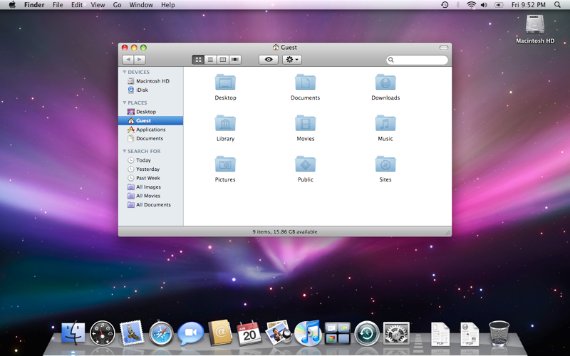

Розвиток MacOS
Коротка історія розвитку операційної системи MacOS
macOS — серія пропрієтарних графічних операційних систем корпорації Apple Inc. Перший випуск відбувся у 2001 році. Є спадкоємицею Mac OS 9 — так званого остаточного релізу «класичної» Mac OS — основної операційної системи корпорації Apple з 1984 року. OS X входить в сімейство операційних систем Apple OS X, до якого також належить ОС для мобільних пристроїв — iOS. У macOS використовується ядро Darwin, засноване на мікроядрі Mach, що містить код, написаний самою компанією Apple та код, отриманий з ОС NeXTSTEP та FreeBSD. Apple macOS випускається для комп'ютерів Macintosh (Макінтош) на базі процесорів PowerPC та Intel (починаючи з версії 10.6,) macOS підтримує тільки комп'ютери Mac на базі процесора Intel. Mac OS — друга за популярністю у світі операційна система. Її ринкова частка в червні 2010 року — ▲ 6,8%
Особливості:
- Внутрішня модель графічного шару Quartz добре взаємодіє з Portable Document Format (PDF), роблячи можливим вивід PDF на різні пристрої.
- Повнокольорові масштабовані іконки.
- Тіні навколо вікон та ізольованих текстових елементів дають відчуття глибини.
- Глобальні для застосунків меню — перевірка орфографії, палітра спеціальних символів, вибір кольору, вибір шрифту і словник.
- Згладжування для віджетів, тексту, графіки та віконних елементів.
- Нові елементи інтерфейсу, такі як дроери (drawers) і модальні діалогові вікна для документа.
- Нова концепція перемикача завдань.
- «Плаваючий» фокус (Interweaving windows) при перемиканні між вікнами різних застосунків.
- ColorSync використовується для вибору кольору, вбудований у бібліотеки малювання, для друку або мультимедіа.
- OpenGL використовується для виведення вікон на екран, що дозволяє використовувати апаратне прискорення. Ця технологія (що з'явилася в 10.2) називається Quartz Extreme.
- Dashboard (з'явився у версії 10.4) підтримує невеликі застосунки, звані віджетами (widgets), які можуть бути викликані і заховані одним натисканням.
- Exposé (з'явився у версії 10.3) — показує всі відкриті вікна як мініатюрні, що дозволяє перемикатися між ними, показує всі документи програми як мініатюри або приховує всі вікна, щоб отримати доступ до робочого столу.
- Використовується Unicode у всій операційній системі.
- Добре спроєктована архітектура для локалізації дозволяє повністю відокремити код застосунку від текстової інформації.
- FileVault (з'явився у версії 10.3) шифрує домашній каталог користувача за допомогою 128-бітного AES.
- Spotlight Пошукова технологія (з'явилася у версії 10.4) справляє швидкий пошук даних, повідомлень електронної пошти, фотографій та іншої інформації в реальному часі. Ґрунтується на властивостях файлу та/або його вмісті.
- Automator (з'явився у версії 10.4) — програма, що дозволяє автоматизувати дії здійснені з різними застосунками.
- «Зв'язку ключів» (Keychain) — система управління паролями, сертифікатами, ключами користувача. Дозволяє приладженням зберігати подібні дані у єдиному зашифрованому сховище. Застосунків, що працюють з дозволу користувача можуть звертатися до даних інших програм, що зберігається в «Зв'язці ключів».
- Розумні папки (що з'явилися у версії 10.4) дозволяють створювати динамічно оновлювані каталоги, що залежать від критерію пошуку.
- Добре певний набір Human Interface Guidelines, якому слід більшість застосунків роблять їх інтуїтивно зрозумілими. Він складається з елементів інтерфейсу і гарячих клавіш.
- Xgrid дозволяє Макам брати участь в розподілених обчисленнях.
- Вбудовані у віртуальну файлову систему дискові образи . Dmg підтримують шифрування, стиснення і опціональну можливість читання/запису.
- Вбудовані сервіси синхронізації (з'явилися у версії 10.4) дозволяють застосункам централізованого звертатися до розширюваної базі даних за різними елементами користувача, такими як календар, паролі або контакти. Операційна система керує конфліктами і збереженням даних.
СHEETAH (03/2001 — OS X 10.0)
Історія macOS розпочалася з ведмедя, а не з хижої кішки (cheetah – гепард). У вересні 2000 року компанія Apple представила версію Kodiak (англ. ведмідь). За $30 користувачі могли придбати першу бета-версію Mac OS X. Офіційна версія ОС 10.0 із кодовим ім'ям Cheetah вийшла через 6 місяців. У ній був вперше представлений інтерфейс Aqua та ранні версії додатків TextEdit, Preview, Mail та QuickTime. Нова ОС X вимагала на той час цілих 128 Мб ОЗУ і 800 Мб пам'яті на диску.

Ілюстрація роботи СHEETAH
PUMA (09/2001 — OS X 10.1)
Через півроку була випущена версія з кодовим ім'ям Puma. Замість того, щоб наголошувати на додаванні нових властивостей і характеристик, фокус був зроблений на поліпшенні продуктивності системи. З виходом Mac OS 10.1.2 компанія Apple також почала встановлювати OS X у нові комп'ютери за замовчуванням, назавжди відмовившись від версії OS 9.
Ілюстрація роботи PUMA
JAGUAR (08/2002 — OS X 10.2)
Система Jaguar включала такі програми, як iChat і Address Book. У новій версії ОС був представлений компонент Universal Access, завдяки якому OS X стала більш доступною у використанні для людей з порушеннями зору або слуху та іншими обмеженими можливостями. Крім цього, в ОS 10.2 з'явилася нова заставка: на зміну логотипу Happy Mac прийшла нова картинка з логотипом Apple.

Ілюстрація роботи JAGUAR
PANTHER (10/2003 — OS X 10.3)
Хлопці з Microsoft, мабуть, мали змішані почуття до нової версії ОС від Apple, яка отримала кодове ім'я Panther. З одного боку, замість браузера Internet Explorer для Mac за промовчанням встановлювався новий браузер Safari. З іншого боку, версія 10.3 продемонструвала покращену міжопераційну сумісність із Microsoft Windows (включаючи встановлену підтримку служби каталогів Active Directory). Плюс до всього, Apple додала функцію Exposé для покращення роботи з кількома відчиненими вікнами.

Ілюстрація роботи PANTHER
TIGER (04/2005 — OS X 10.4)
Версія Tiger привнесла безцінну пошукову програму Spotlight. У ній же вперше були представлені віджети (як калькулятор, календар чи годинник) на новій панелі Dashboard. Крім того, у версії Mac OS 10.4 було представлено нове апаратне забезпечення. Воно було встановлено на перших комп'ютерах Mac із процесорами Intel і на перших пристроях Apple TV (їм ще потрібно з'явитися в 2007 році).

Ілюстрація роботи TIGER
LEOPARD (10/2007 — OS X 10.5)
Ця версія Mac OS була у розробці досить довго. Справа в тому, що Apple у цей час активно займалася створенням та випуском iOS та iPhone. В ОС Leopard, однак, було вбудовано систему архівації під назвою Time Machine. Оновлена система також почала підтримувати 64-бітові програми. Более того, с помощью программы Boot Camp компьютеры Mac теперь могли поддерживать другие операционные системы, как, например, Microsoft Windows.
Ілюстрація роботи LEOPARD
SNOW LEOPARD (08/2009 — OS X 10.6)
Як відомо з назви, Snow Leopard була побудована здебільшого на зразок попередньої версії. Але в ній був представлений Mac App Store, який пішов за успішною реалізацією проекту на iOS. Версія Mac OS 10.6 також поставила крапку у використанні архітектури PowerPC. З цього часу використовувалися лише процесори Intel.
Ілюстрація роботи SNOW LEOPARD
LION (07/2011 — OS X 10.7)
Система Lion (від англ. Лев) стала першою версією Mac OS, недоступною на CD або DVD. Нову версію можна було лише завантажити. Для її створення було взято багато ідей з iOS: Gestures, Launchpad, відновлення вікон та ін. Нова частина інфраструктури Apple iCloud також дебютувала у Mac OS 10.7.
Ілюстрація роботи LION
MOUNTAIN LION (07/2012 — OS X 10.8)
Mountain Lion включила ще більше успішних концепцій з iOS: новий додаток Messages замість iChat, додаток Reminders і Notification Center. Ще до презентації OS 10.8 Apple зробила гучне повідомлення: компанія пообіцяла щорічний випуск нових версій Mac OS.
Ілюстрація роботи MOUNTAIN LION
MAVERICKS (10/2013 — OS X 10.9)
З новою версією Apple представила нову схему призначення імен ОС (до цього версії називалися на честь представників сімейства котячих, тепер почали використовувати назви відомих місць у Каліфорнії). Також оновлення до OS 10.9 зробили безкоштовним та пообіцяли, що наступні оновлення також будуть безкоштовними. У Maverics були представлені нові програми Maps і iBooks.
Ілюстрація роботи MOUNTAIN MAVERICKS
YOSEMITE (10/2014 — OS X 10.10)
У Mac OS 10.10 відбулася найбільша зміна дизайну за кілька років. Зміни відбулися за оновленнями iOS з більш плоским дизайном та ефектом розмиття. З'явилася функція Handoff, завдяки якій користувачі без особливих зусиль могли перемикатися з одного пристрою на інший, навіть при виконанні окремих завдань. Також було зроблено акцент на режимі Full Screen Mode, який активувався дотиком зеленої кнопки в рядку заголовка.

Ілюстрація роботи YOSEMITE
EL CAPITAN (09/2015 — OS X 10.11)
Версія El Capitan названа на честь гірської вершини у національному парку Йосеміті. Вона була сфокусована на покращенні продуктивності та стабільності системи. Крім незначних оновлень Safari, Spotlight, Mail та Notes та презентації режиму Split Views, найбільшим оновленням стала можливість зручного розташування вікон додатків поруч один з одним.

Ілюстрація роботи EL CAPITAN
SIERRA (09/2016 — macOS 10.12)
Прощай, OS X, привіт, macOS. Вкотре властивості iOS все більше включаються в ОС Apple на ПК. І це стосується не тільки назви: асистент Siri, представлений спочатку на iPhone, тепер є і в macOS. У Sierra в браузері Safari були також представлена система Apple Pay, а за допомогою Apple Watch можна було розблокувати Mac. Але, мабуть, найважливішим оновленням стало додавання Stickers до iMessage.